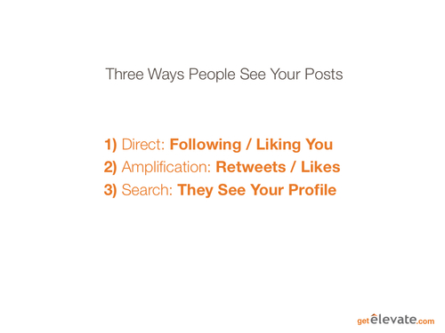
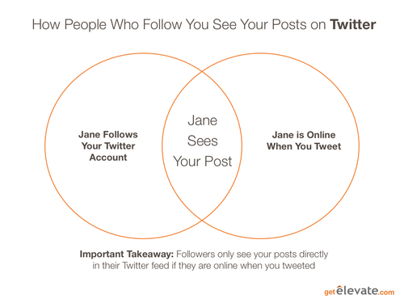
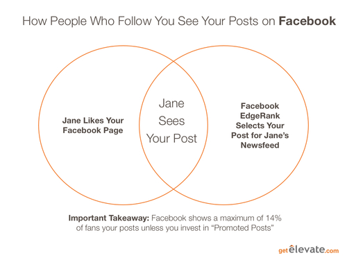

Social media managers put their heart, time and energy into creating and finding great content to share online, but often the most important posts aren't seen by their target audience- or even their most loyal followers. Although great content often rises to the top, sometimes due to bad timing or just plain old random chance that content doesn’t get shared by the first few people who see it. In this post I'm going to outline a concise explanation of how content spreads (or doesn't) and how you can maximize the chances of getting your content into the hands of the people who most need to read it.
In case you don't have time to read the whole thing, I recommend that you presume people are busy and don't have time to check your accounts all the time. An email of your best posts is a great way to make it fast and easy for your brand advocates to see and share your content.
The Three Ways People See Your Content on Twitter (and Facebook, LinkedIn, and Everywhere Else)

There are three ways people see your posts on Facebook, Twitter and LinkedIn. Recognizing how this works is critical to understanding how you can increase the chances of reaching the maximizing the number of people who see it. These are the three ways people see your content. I'm going to use 'Jane' as the example.
1. Direct: Jane is connected directly to you via Twitter, FB or LinkedIn;
2. Amplification: Someone in Jane's network retweeted or liked one of your posts;
3. Search: Jane looked up your profile on Facebook, Twitter or LinkedIn.
You can't do a ton in the way of influencing how many people look up your profiles & pages on Facebook, LinkedIn and Twitter, but you can definitely influence Direct engagement and Amplification. Here's how each of these work and how to improve your chances.
Direct: How Content Reaches People Who Are Connected to You

Facebook uses its own formula, EdgeRank, to select which posts will be shown to fans of your page. It's estimated that a maximum of 14% of fans will see your posts even if they like you. Mark Cuban famously got quite angry about this (more on that here). EdgeRank estimates how relevant the post is to you and then puts it in your newsfeed. Although the formula is secret, it's suspected it blends how recent the post is, how many people have liked or commented on the post, and how recently your fan has interacted with your page. The last part is critical: keeping fans engaged consistently is critical because Facebook fans are like fishing: you need to keep people engaged consistently or you lose them. And you never know if you can get the one that got away again.

LinkedIn hasn't released any information on its formula, but it appears to be simpler than EdgeRank and is a blend of how recent the post is and how many people interacted with it. More interactions means it's more likely to be seen in your feed. The key to increasing engagement on LinkedIn is getting people to like your content. I'll get to how to do that shortly.
Amplification: How Content Reaches People Through Sharing and Liking
This is the same for all three major networks, with some slight complications for Facebook. When people retweet, like or comment on posts it goes into their own feeds. This activity is then sent into the feeds of the people they're connected to.
For Twitter this content is sent directly into the feeds of people who follow them.
For LinkedIn it's sent into the feeds of people they're connected to unless that person has specifically opted not to receive posts from them).
For Facebook the like and commenting activity is put into EdgeRank and then shared to other user's newsfeeds depending on the ranking (ranking is the same as explained above and includes timing of the post, how recently that person interacted with the sharer, and how much activity is on the comment).
Search amplifies this even further because when people Google the names of your employees and customers that use LinkedIn and Twitter they will find your posts if these employees and customers liked or retweeted them. This is why employee and customer engagement is so critical.
Search: How Content is Seen on Your Profiles & Pages
The third major way people see your content is when they look up your profiles and pages directly. They then see what your latest posts. This is important for your brand on Facebook and LinkedIn, but it is most critical for your brand on Twitter since your company's Twitter profile often shows up as the second highest result after your company website in Google. As explained above, the posts your customers, fans and employees like or reshare on their personal profiles amplify the power of search.
Why Does This Matter?
This matters because companies need to recognize that great content created or curated by social media managers needs multiple lives.
When you put time into writing that perfect Tweet, it might not get seen if your active followers just happened not to be using Twitter at the time. If you can get customers, followers and fans to retweet that content later you give it a second, third, fourth, and many more lives. This is also the only way to improve your content's odds that it will get seen on Facebook and LinkedIn.
So How Do You Improve Your Odds?
Brad Milne and I have run software startups for the past 7 years, all in the community engagement and social media spaces. Using social business tools like Yammer and Chatter is one option, but tough if you don’t immediately get a high level of engagement. Custom communities from sites like Lithium and Jive can work if implemented flawlessly, but require exceptional execution and major investments. The best tool for getting more sharing and engagement is the oldest: email. Email your best posts to the customers, fans and employees that want to see them. Do it the old fashioned way by sending the Tweets and their URLs in plain text if you need to or try tools like my company's, Elevate, but whatever you do, make sure you're doing something. A great tweet is a terrible thing to waste.
@ Copyright 2013 Elevate Inc. All Rights Reserved